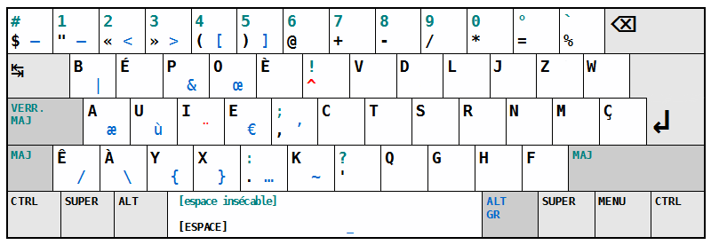

bepo contribution layer for Spacemacs
Table of ContentsClose
1 Description
This layer changes the key bindings in spacemacs to be compatible with the bepo
keyboard layout. bepo is a keyboard layout optimized for the French language.
This package first switch traditional hjkl movement keys with ctsr, and then
try to correct the bugs introduced by these changes in other modes/packages.

2 Mapping
The mapping correction is the one proposed for vim on the bepo's official wiki. This layer tries to do the following changes when the following letters are used for doing a movement:
- Map the movements keys under the right hand's fingers:
c → ht → js → kr → l
- Map lost functionalities back to some keys:
h → rj → tk → sl → c
The equivalent remapping is also valid for uppercase letters when they are used te represent a movement, or to keep the mnemonic between the lower/upper-case consistent.
Some bepo keys are not used in traditional mapping, mainly because they are not
present on the en-us keyboard layout. They can be used as an alias for other
shortcuts:
- Map unused
ékey as an alias ofw, more useful in vim mode:é → wÉ → W
- Map indentation on direct-access keys:
» → >« → <
Some default configurations are also not optimal for vim, so the following defaults are changed:
- Change
evil-escapeescape combination to something faster to type, while being nearly nonexistant in french or english words:fd → gq
- In
avy, the key used to select words/lines are remapped to the 8 characters under the fingers:a u i e t s r n
- Add
«and»as operators forevil-surround, surrounding text with the specified symbols.
In some cases the key remapping will not follow these conventions, mainly because there are better alternatives, or because some moves don't make sense.
Example: In magit status, the c is used for commit by default, but if we
want to follow the conventions, it should be remapped to "move left". As it is
not useful to move left on magit, because operations are done on lines, the
c is not remapped.
Note: One difference exists with the wiki version: the w is not remapped to
C-w to avoid having to change its meaning in other modes. Spacemacs provides
already a SPC w key binding for working with windows.
3 Supported modes/packages/layer
- avy
- company
- evil
- evil-escape
- evil-surround
- evil-window
- helm
- magit
- neotree
- org
- ranger
- spacemacs
4 Install
To use this contribution add it to your ~/.spacemacs
(setq-default dotspacemacs-configuration-layers '(bepo))
5 Key bindings
Thanks to `which-keys`, you shouldn't probably have to go through this list, the keys being shown after a small delay following a keypress.
5.1 company
| Key Binding | Description | Replace/equivalent |
|---|---|---|
C-t |
Company next line | C-j |
C-s |
Company previous line | C-k |
C-r |
Company complete selection | C-l |
5.2 evil
| Key Binding | Description | Replace/equivalent |
|---|---|---|
c |
Move the cursor left | h |
t |
Move the cursor down | j |
s |
Move the cursor up | k |
r |
Move the cursor right | l |
C |
Top of the window | L |
T |
Join lines | J |
S |
Smart doc lookup | K |
R |
Bottom of the window | H |
h |
Replace | r |
j |
Until | t |
k |
Substitute | s |
l |
Change | c |
H |
Replace mode | R |
J |
Backward Until | T |
K |
Substitute line | S |
L |
Change line | C |
é |
Word (without punctuation) | w |
É |
WORD (with punctuation) | W |
» |
Indent | > |
« |
Unindent | < |
5.3 evil-escape
| Key Binding | Description | Replace/equivalent |
|---|---|---|
gq |
Escape | fd |
5.4 evil-surround
| Key Binding | Description | Replace/equivalent |
|---|---|---|
k |
Evil-surround functionalities | s |
5.5 evil-window
| Key Binding | Description | Replace/equivalent |
|---|---|---|
SPC w c |
Window left | SPC w h |
SPC w t |
Window down | SPC w j |
SPC w s |
Window up | SPC w k |
SPC w r |
Window right | SPC w l |
SPC w C |
Window move far left | SPC w H |
SPC w T |
Window move very bottom | SPC w J |
SPC w S |
Window move very top | SPC w K |
SPC w R |
Window move far right | SPC w L |
SPC w k |
Split window below | SPC w s |
SPC w l |
Delete window | SPC w c |
SPC w H |
Rotate windows | SPC w R |
SPC w K |
Split window below and focus | SPC w S |
SPC w L |
Ace delete window | SPC w C |
SPC w é |
Other window | SPC w w |
SPC w q |
Delete window | SPC w c |
SPC é |
Alias for SPC w |
SPC w |
5.6 helm
| Key Binding | Description | Replace/equivalent |
|---|---|---|
C-t |
Helm next line | C-j |
C-s |
Helm previous line | C-k |
C-j |
Helm toggle resplit and spawn windows | C-t |
C-k |
Helm find files run grep | C-s |
5.7 magit
| Key Binding | Description | Replace/equivalent |
|---|---|---|
t |
Next line | j |
s |
Previous line | k |
k |
Stage change | s |
j |
Tag popup | t |
h |
Discard change | k |
5.8 neotree
| Key Binding | Description | Replace/equivalent |
|---|---|---|
c |
Spacemacs/neotree collapse or up | h |
t |
Evil next visual line | j |
s |
Evil previous visual line | k |
r |
Spacemacs/neotree expand or open | l |
C |
Neotree select previous sibling node | H |
T |
Neotree select down node | J |
S |
Neotree select up node | K |
R |
Neotree select next sibling node | L |
h |
Neotree hidden file toggle | l |
k |
Neotree rename node | r |
l |
Neotree create node | c |
H |
Neotree change root | R |
5.9 org
| Key Binding | Description |
|---|---|
t |
Evil next visual line |
M c |
Org metaleft |
M t |
Org metadown |
M s |
Org metaup |
M r |
Org metaright |
M C |
Org shiftmetaleft |
M T |
Org shiftmetadown |
M S |
Org shiftmetaup |
M R |
Org shiftmetaright |
SPC m C |
Org shiftleft |
SPC m T |
Org shiftdown |
SPC m S |
Org shiftup |
SPC m R |
Org shiftright |
SPC m s |
Org schedule |
SPC j |
Org todo |
C S c |
Org shiftcontrolleft |
C S t |
Org shiftcontroldown |
C S s |
Org shiftcontrolup |
C S r |
Org shiftcontrolright |
SPC m t C |
Org table move column left |
SPC m t T |
Org table move row down |
SPC m t S |
Org table move row up |
SPC m t R |
Org table move column right |
SPC m t c |
Org table previous field |
SPC m t t |
Org table next row |
SPC m t r |
Org table next field |
SPC g t |
Org forward heading same level |
SPC g s |
Org backward heading same level |
M h |
Capitalize word |
M j |
Transpose chars |
M l |
Move to window line top bottom |
M H |
Capitalize word |
M J |
Transpose chars |
M L |
Move to window line top bottom |
SPC m H |
Org refile |
SPC m J |
Org show todo tree |
SPC m K r |
Org demote subtree |
SPC m K c |
Org promote subtree |
SPC m K t |
Org move subtree down |
SPC m K s |
Org move subtree up |
SPC m L |
Evil org recompute clocks |
SPC m t h |
Org table recalculate |
SPC m t k |
Org table sort lines |
SPC m t l |
Org table convert |
SPC m t j f |
Org table toggle formula debugger |
SPC m t j o |
Org table toggle coordinate overlays |
SPC « |
Org metaleft |
SPC » |
Org metaright |
5.10 ranger
| Key Binding | Description | Replace/equivalent |
|---|---|---|
c |
Ranger up directory | h |
t |
Ranger next file | j |
s |
Ranger prev file | k |
r |
Ranger find file | l |
C |
Ranger prev history | H |
T |
Ranger next subdir | J |
S |
Ranger prev subdir | K |
R |
Ranger next history | L |
H |
Dired do rename | R |
K |
Eshell | S |
5.11 spacemacs-specific
| Key Binding | Description | Replace/equivalent |
|---|---|---|
SPC j c |
Push mark and goto beginning of line | SPC j h |
SPC j t |
Sp newline | SPC j j |
SPC j s |
Evil goto next line and indent | SPC j k |
SPC j r |
Push mark and goto end of line | SPC j l |
SPC j T |
Split and new line | SPC j J |
SPC i T |
Insert line below no indent | SPC i J |
SPC i t |
Evil insert line below | SPC i j |
SPC i y |
Helm yas | SPC i S |
SPC i Yc |
Auto yasnippet create | SPC i Sc |
SPC i Ye |
Auto yasnippet expand | SPC i Se |
SPC i Yw |
Auto yasnippet persist snippet | SPC i Sw |
6 Contributors
- Fabien Dubosson